The reference sets the visual hierarchy. Production images use the captured source publications and licensed historical imagery; fictional reference values and building forms are not evidence.
Implementation, validation and data boundaries
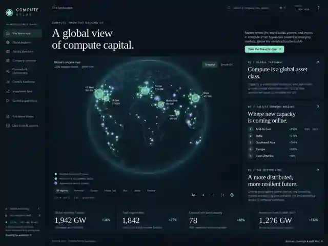
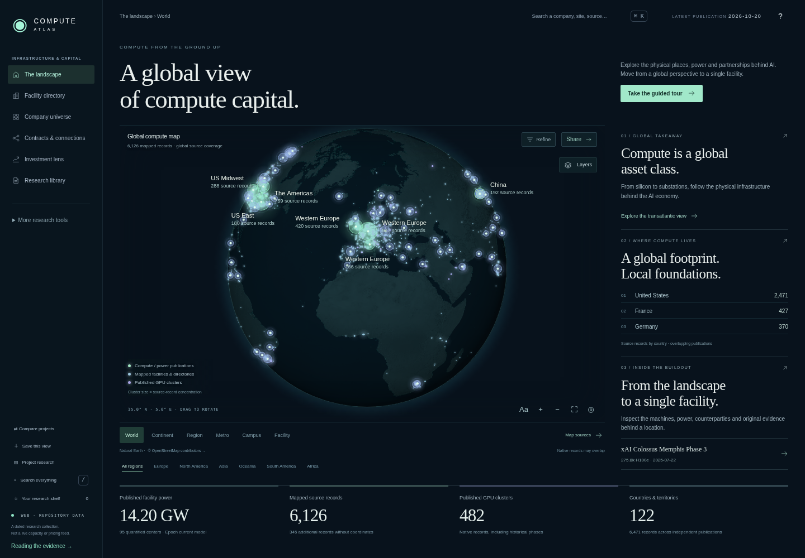
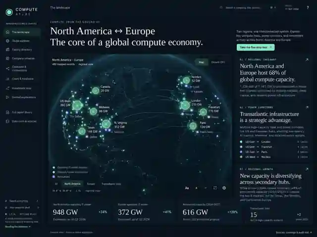
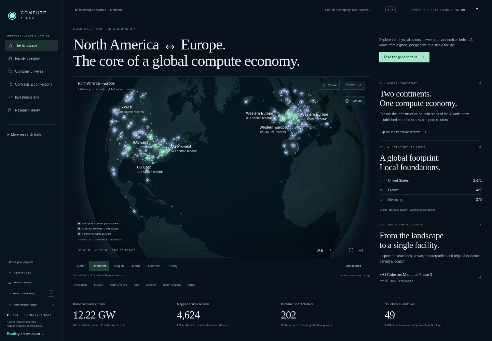
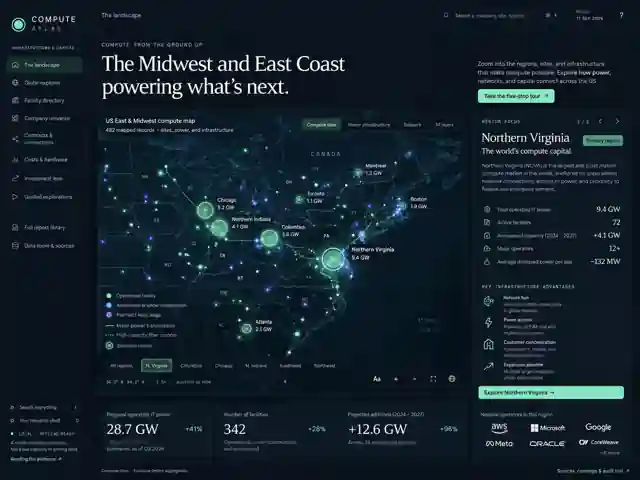
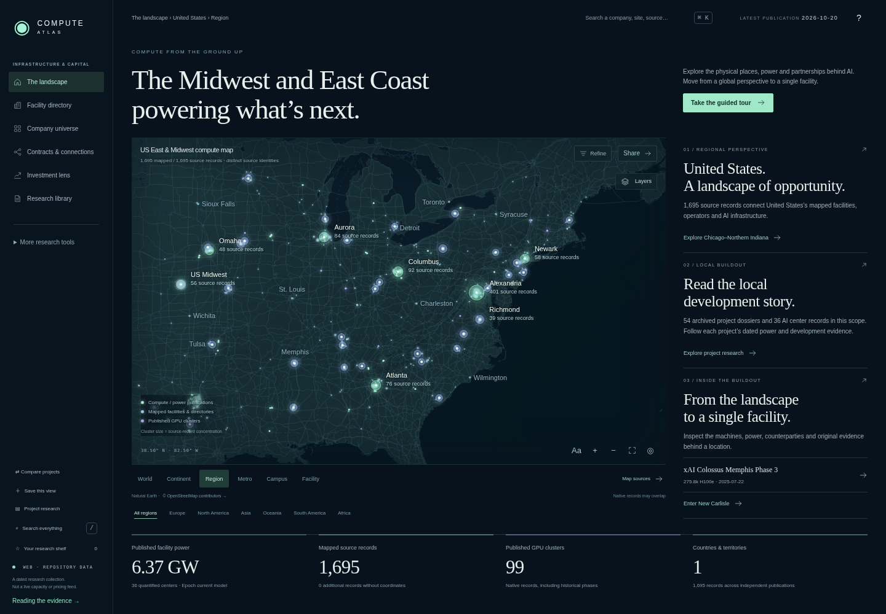
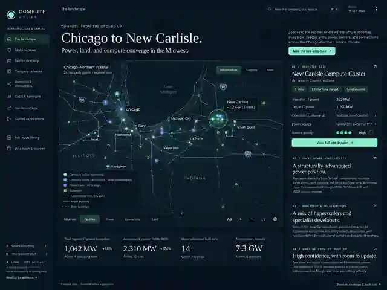
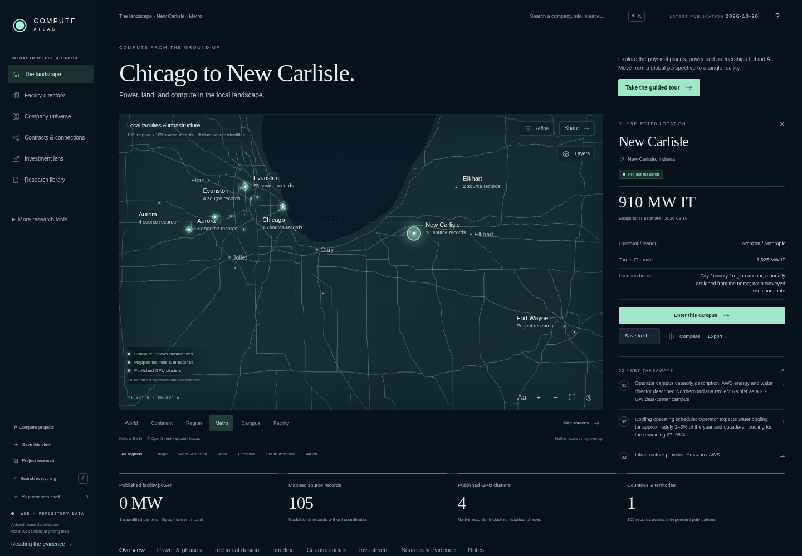
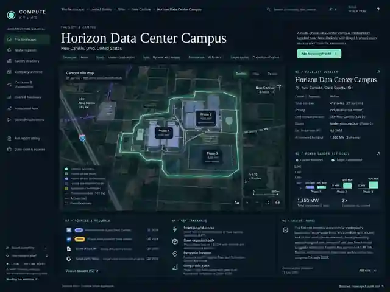
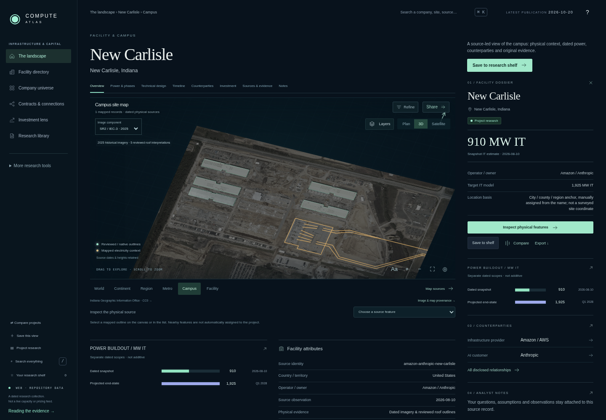
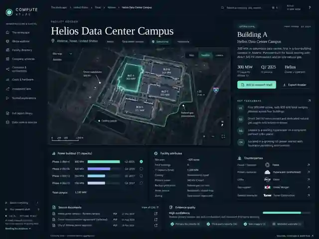
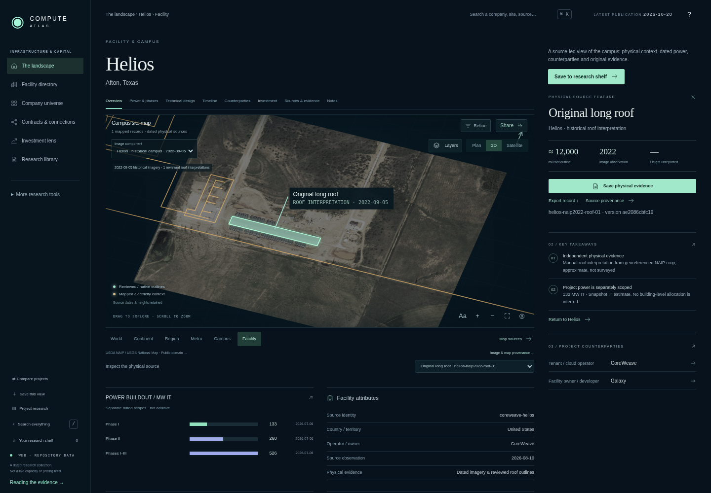